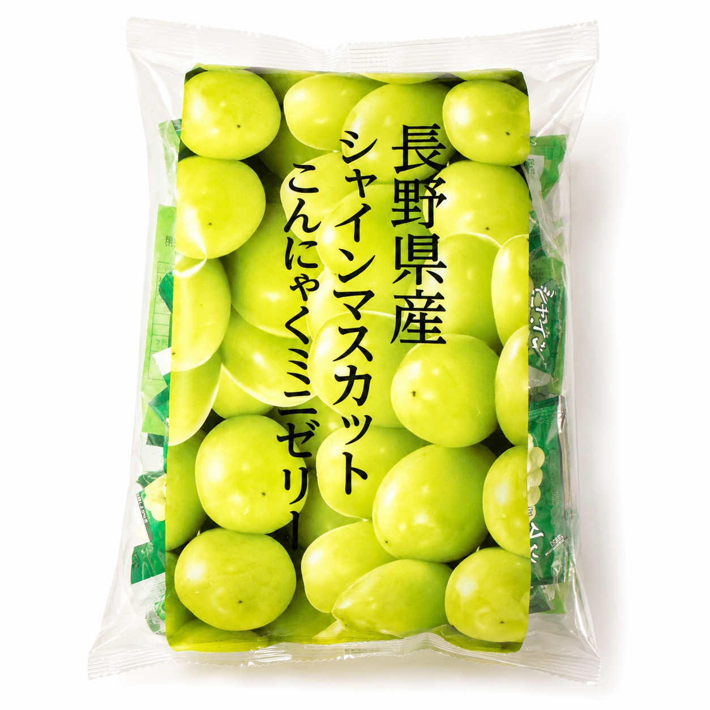
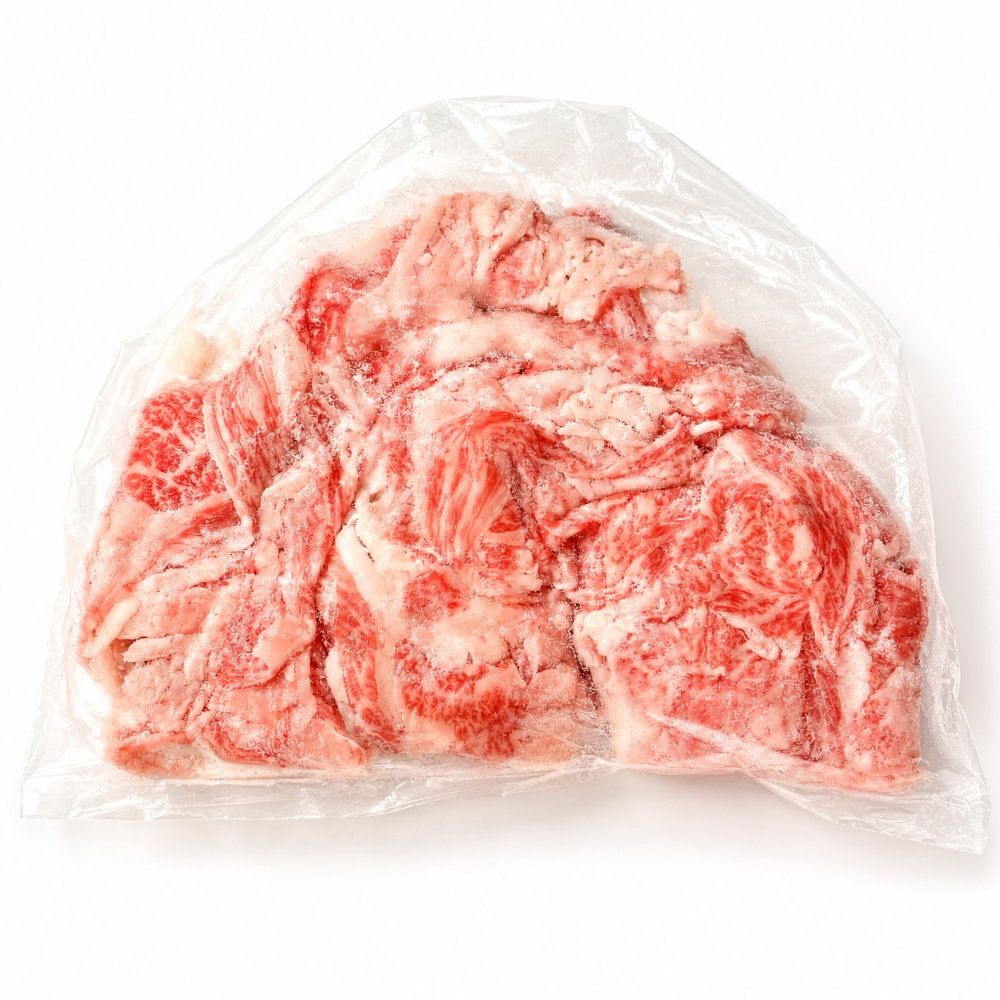
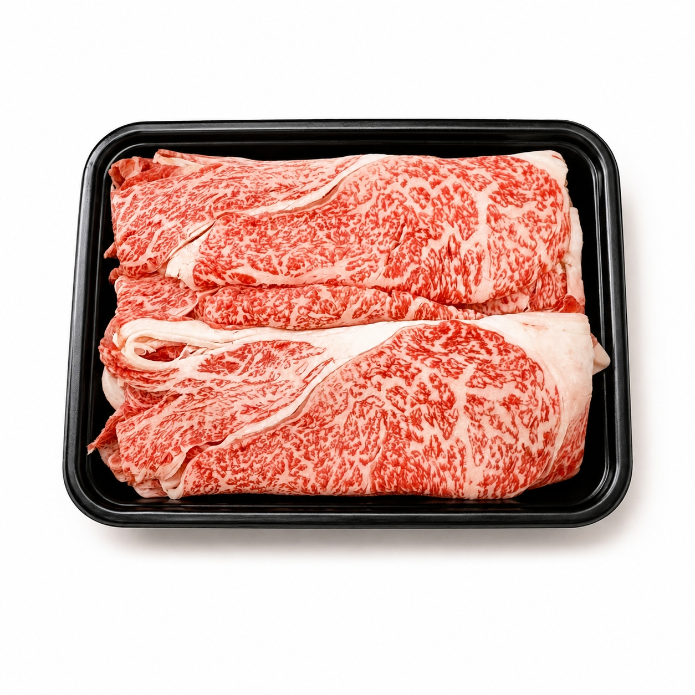

MEAT PLUS OFFICIAL GUIDE
今夜の「おいしい」が、
ここで見つかる。
内容量・保存方法・おすすめの楽しみ方を確認して、MEAT PLUS公式オンラインショップで購入できます。
商品を選ぶ ↓PRODUCTS
商品を探す
気になる商品を選ぶと、詳しい情報と公式購入先を確認できます。
16 / 16件を表示
該当する商品が見つかりませんでした。条件を変えてお試しください。

スイーツ・菓子
ムラオカのあま梅 10個/ｐ
カリカリ梅
商品を見る →
スイーツ・菓子
ムラオカのあま梅 20個/箱
カリカリ梅
商品を見る →
スイーツ・菓子
ムラオカの梅しば
ネコポス便
商品を見る →
スイーツ・菓子
ムラオカの梅しば
【カリッとした歯ごたえと甘酸っぱさがクセになる、懐かしの味。】
商品を見る →
スイーツ・菓子
宮崎マンゴーこんにゃくミニゼリー
宮崎県産マンゴーピューレ1.25％使用 1個約15ｇ
商品を見る →
スイーツ・菓子
長野県産シャインマスカットこんにゃくミニゼリー
長野県産 1個約15ｇ
商品を見る →
惣菜・加工品
お肉屋さんが作った特製ニラ焼餅
お肉屋さんが作った特製ニラ焼餅
商品を見る →
惣菜・加工品
オリジナルビーフカレー
販売は辛口or甘口セット SKUは、4で ・甘口3ｐ、5ｐ ・辛口3ｐ、5ｐ
商品を見る →
惣菜・加工品
国産梅ひじき
【国産ひじきの旨味とカリカリ梅の酸味。ご飯がすすむ、食卓のもう一品。】
商品を見る →
惣菜・加工品
赤鶏炭火焼
ローズソルト（岩塩）使用
商品を見る →
牛肉
九州産黒毛和牛ロースブロック
九州産黒毛和牛ロースブロック
商品を見る →
牛肉
訳あり！九州産黒毛和牛バラ切り落とし
・約500ｇの袋入りです。 ・※本商品は、食品ロス削減（SDGs）への取り組みの一環として、九州産黒毛和牛のバラ肉をほとんどトリミングせずに切り落とした「訳あり品」です。脂身が多い部分も含まれますのでご理解・ご了承の上お申し込みください。
商品を見る →
牛肉
九州産黒毛和牛スライス
【A4～A5等級】
商品を見る →
牛肉
九州産黒毛和牛肩ローススライス 250ｇ/ｐ
【A4～A5等級】
商品を見る →
牛肉
九州産黒毛和牛大判霜降り切り落とし
切り落としと侮るべからず！「えっ、これ切り落とし！？」と思わず口に出るほど大きな一枚肉！ 旨みたっぷり。九州産の上質な肩ロース（約30ｋｇ以上）の塊を、そのままバサッと使いやすい切り落としにしました！
商品を見る →
スイーツ・菓子
ミックスビーンズ
¥980税込
いろいろな味と食感を一袋で楽しめる、ミックスビーンズです。
商品を見る →